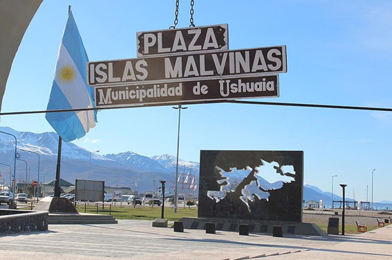

2 de Abril: Los Argentinos rememoran la valentía de sus Veteranos de Guerra
Este día los argentinos realizan diversas actividades culturales
y artísticas en la plaza Estado Vaticano
También, la Ciudad presentará una visita guiada y visibilización
de monumentos para mantener activa la memoria histórica de Malvinas
La conmemoración del El 2 de Abril como el Día del Veterano y de los Caídos en la
guerra de Malvinas fue establecido por ley del congreso nacional en el año 2000,
declarándose además como feriado nacional.
Este año se celebra el 40 aniversario de la guerra.

Conocer la historia de un acontecimiento como estos nos brinda la posibilidad
de ampliar la perspectiva de nuestro propia historia, si duda me genera gran admiración
saber como uno pobres soldados dieron batalla al imperio britanico en la guerra de Malvinas
Seria maravilloso participar de sus desfiles.